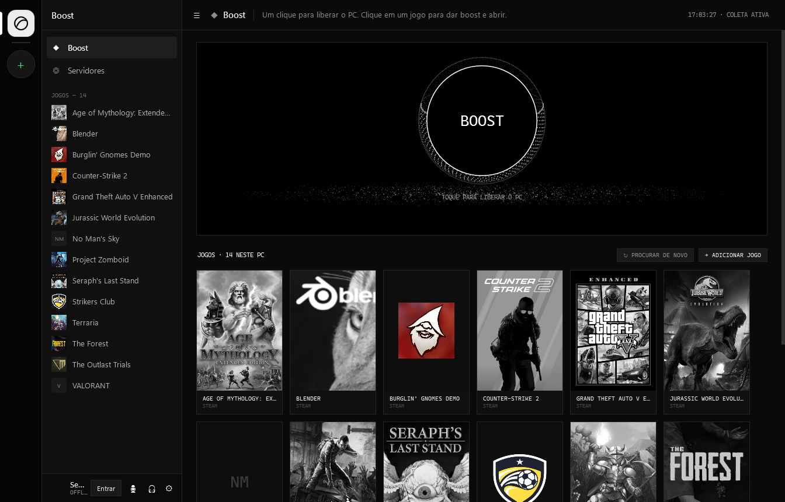
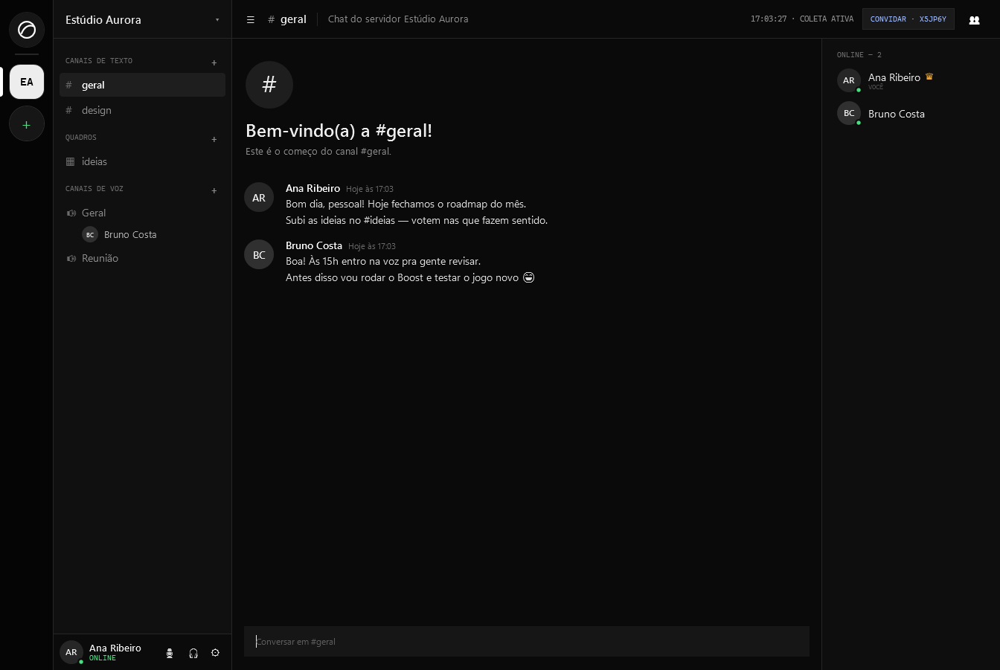
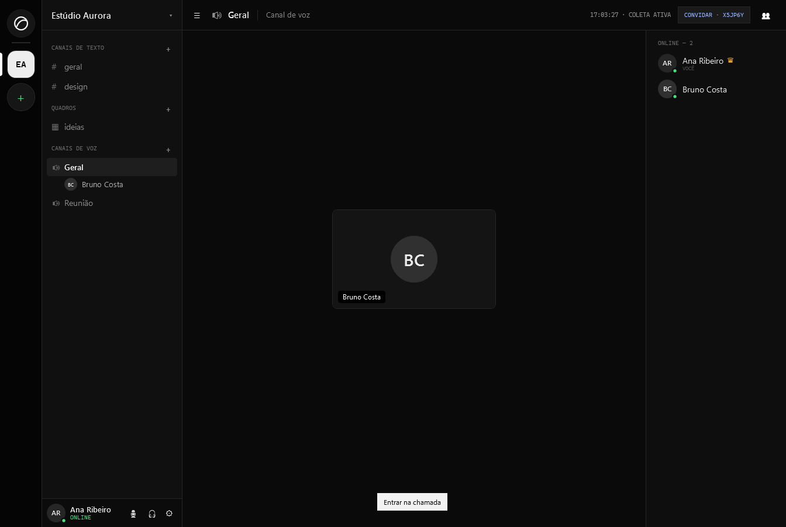
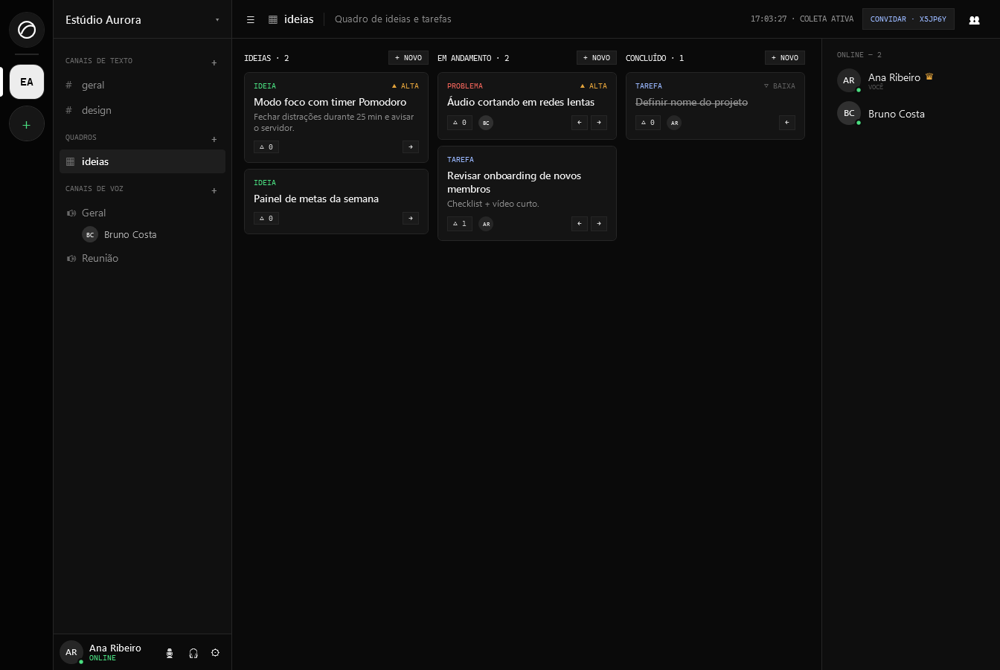

WINDOWS 10 · 11 — GRÁTIS
Jogue, converse e trabalhe no mesmo app.
Um botão de Boost que libera o PC antes de abrir o jogo. Servidores com chat e voz para o seu grupo. Quadros de ideias e tarefas dentro de cada servidor.
O Ximbuismo é para Windows. Abra este site no seu PC para baixar.

01 / BOOST
Um botão. Sem configuração.
O Ximbuismo encontra os jogos instalados na Steam, Epic, GOG, Ubisoft e Riot e mostra as capas. Clique num jogo e ele recebe o boost e abre.
- Energia plano de desempenho enquanto você joga
- Prioridade o jogo em alta, os programas de fundo em baixa
- Memória libera a RAM presa em processos parados
- Volta ao normal tudo é desfeito quando o jogo fecha
02 / SERVIDORES
Seu grupo, com chat e voz.
Crie um servidor e chame os amigos pelo código de convite. Cada servidor tem canais de texto, canais de voz e a lista de quem está online, do jeito que você já conhece.
- Texto canais separados por assunto
- Voz entre e saia da chamada com um clique, com microfone e áudio no painel
- Convite um código curto para entrar


03 / QUADROS
Ideias e tarefas no mesmo lugar da conversa.
Cada servidor pode ter quadros com colunas Ideia, Em andamento e Concluído. Marque o tipo, a prioridade e o responsável, e vote no que vale fazer primeiro.
- Tipos ideia, tarefa e problema
- Votos o time mostra o que importa
- Ao vivo todo mundo vê as mudanças na hora

INSTALAR
Pronto em menos de um minuto.
-
01
Baixe
Clique em Baixar para Windows e salve o
Ximbuismo-Setup.exe. -
02
Abra e instale
Clique em Instalar. Não precisa de administrador. Se o Windows mostrar “O Windows protegeu o computador”, clique em Mais informações e depois em Executar assim mesmo.
-
03
Crie sua conta
Abra o Ximbuismo pelo atalho, crie a conta e entre num servidor ou crie o seu.
Para desinstalar: Configurações do Windows › Aplicativos, procure por Ximbuismo.